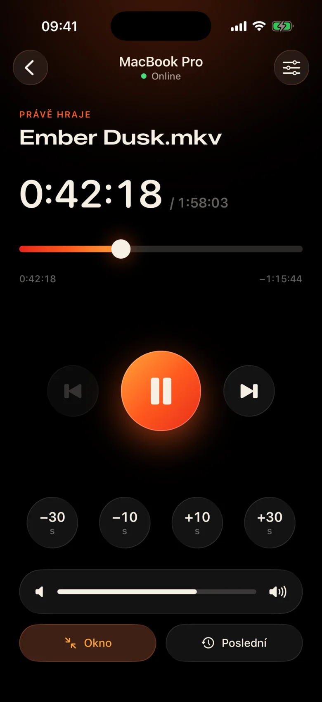
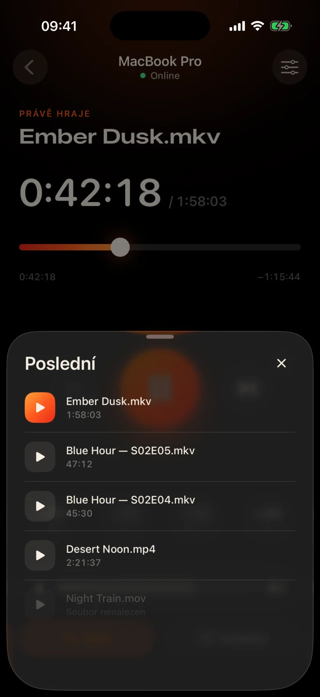
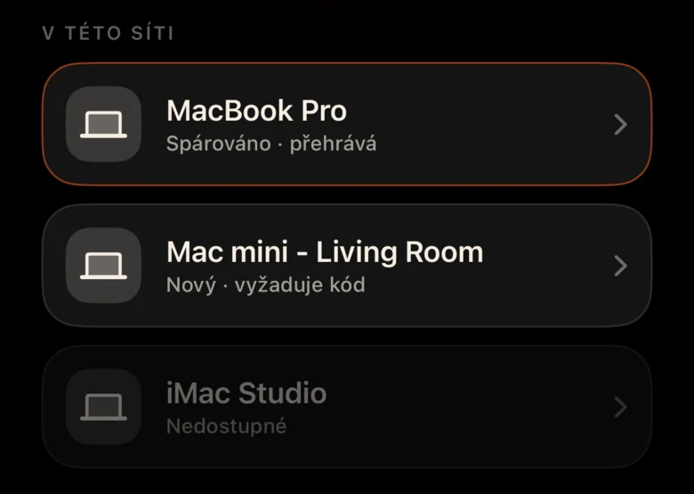
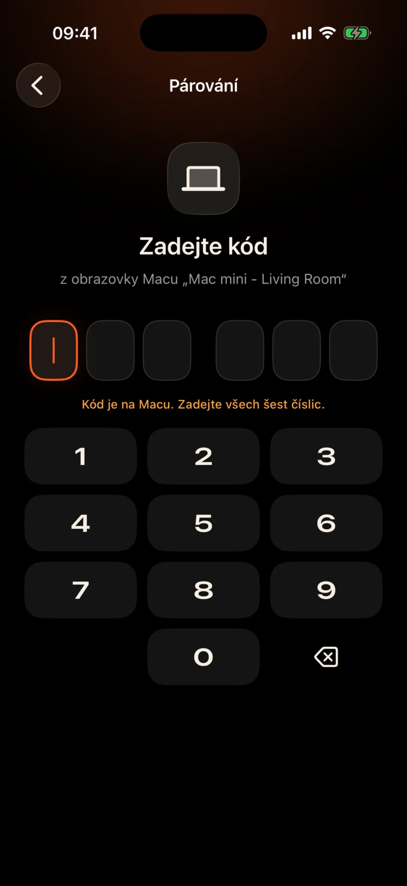

Mac je přes celou místnost
Je zapojen do projektoru u zdi. Každá pauza znamená vstát, najít trackpad ve tmě a mžourat na malinkou ovládací lištu.
Kinrox: klepněte na pauzu na telefonu v ruce.
Kinrox přehraje jakékoli video na vašem Mac – a promění váš iPhone v jeho dálkový ovladač. MacBook na projektoru, vy na pohovce: pozastavte se, skočte o 10 sekund zpět, snižte hlasitost nebo spusťte další epizodu, aniž byste opustili přikrývku.


Je zapojen do projektoru u zdi. Každá pauza znamená vstát, najít trackpad ve tmě a mžourat na malinkou ovládací lištu.
Kinrox: klepněte na pauzu na telefonu v ruce.
V jedné scéně šepot, v další exploze – a ve vedlejší místnosti už někdo spí.
Kinrox: posuvník hlasitosti přímo pod palcem.
Webové panely s IP adresami a hesly, záložka prohlížeče, která usne, tlačítka jako stvořená pro stůl – ne pro gauč.
Kinrox: najde váš Mac sám, spáruje se s jedním kódem.

Velké cíle, temné teplé téma a lehké klepání haptiky pod každým stisknutím. Můžete jej použít, aniž byste odtrhli pohled od filmu.
Ovládací prvky jsou dost velké, abyste se trefili i v polospánku.
Missed a line? One tap back. Skip the intro with two.
Vlastní hlasitost Kinrox, od 0 do 100. Hlasitost systému Mac zůstává nedotčena.
Předchozí a následující soubor ze stejné složky v pořadí Finder.
Vyberte si něco, co jste dříve sledovali – otevře se na Mac.
Přetáhněte časovou osu do libovolného okamžiku, přepněte na celou obrazovku z pohovky.
Žádné IP adresy, žádná hesla, žádný účet. Po prvním kódu se váš iPhone sám znovu připojí.
Přetáhněte soubor do Kinrox nebo stiskněte ⌘ O. Vzdálený server je ve výchozím nastavení zapnutý.
Kinrox se zobrazí samostatně, když jsou obě zařízení připojena ke stejné Wi-Fi.

Mac zobrazuje kód, který trvá dvě minuty. Tři špatné pokusy a je to pryč.


Alex’s iPhone chce ovládat Kinrox. Zadejte tento kód na telefonu.
 Kód vyprší za 1:47
Kód vyprší za 1:47
Video je rozhraní. Tenká vrstva skla se objeví, když ji potřebujete, a po třech sekundách se skryje.

Postaveno na libmpv, motoru za mpv a IINA. Vyberte vložený nebo externí zvuk a titulky. VideoToolbox zvládá hardwarové dekódování.
Kinrox seřadí videa ve složce a spustí další, když epizoda skončí – „2“ před „10“, jako Finder.
Klávesnice ⏯ klávesy, Control Center a Now Playing ovládání Kinrox. Na úvodní obrazovce čeká až 20 posledních souborů.
Vaše Mac a iPhone si vyměňují příkazy k přehrávání přímo přes vaši místní síť. Vaše videa zůstanou na Mac.
Zjišťování přes Bonjour, připojení pouze z vaší vlastní podsítě. Veřejné adresy a mobilní telefony jsou odmítnuty.
Každý příkaz prochází šifrovaným kanálem. Párovací tokeny jsou uloženy v Keychain na obou zařízeních.
X25519HKDF-SHA256ChaCha20-Poly1305Žádné účty ani analýzy využití. Mac denně kontroluje veřejný aktualizační zdroj bez jedinečných identifikátorů nebo profilování systému. Tento web nemá žádné analýzy ani soubory cookie.
Dálkové ovládání vidí názvy a trvání, nikdy cesty k souborům. Otevření posledního souboru je vyřešeno na Mac.
Kinrox je zapsán v Swift 6 a SwiftUI nad libmpv. Každý řádek přehrávače, dálkového ovladače a protokolu je na GitHub.
Sestavení ze zdroje# Xcode 26.5, XcodeGen and mpv from Homebrew
brew install xcodegen mpv pkg-config
git clone https://github.com/awaik/Kinrox.git
cd Kinrox
cp -n Config/Signing.local.xcconfig.example \
Config/Signing.local.xcconfig
# Set your team: docs/runbooks/RUNBOOK-BUILD-AND-SIGNING.md
./Scripts/check-env.sh
./Scripts/generate.sh
xcodebuild -workspace Kinrox.xcworkspace \
-scheme PlayerMac -configuration Debug \
-destination 'platform=macOS,arch=arm64' \
-derivedDataPath DerivedData build
open DerivedData/Build/Products/Debug/Kinrox.appPřehrávání a dálkové ovládání fungují bez přístupu k internetu, když Mac a iPhone sdílejí síť Wi-Fi. Mac používá HTTPS pro každodenní kontroly aktualizací a stáhne aktualizaci, když se rozhodnete ji nainstalovat.
Ano. Kinrox přehrává na čemkoli, co váš Mac zobrazuje – na projektoru, TV přes HDMI nebo na displeji připojeném k AirPlay.
Macs s Apple silicon na macOS 14 Sonoma nebo novější a iPhones na iOS 17 nebo novějším. Intel Macs zatím nejsou podporovány.
Ano. Každý iPhone se jednou spáruje s vlastním kódem; lze připojit až čtyři dálkové ovladače současně. Kterékoli z nich můžete odvolat v nastavení přehrávače.
Ano. Na Mac použijte tlačítko Audio & Subtitles nebo nabídky Audio a Subtitles. Vyberte si vložené skladby, vyhledejte externí soubory ve vnořených složkách nebo vypněte titulky. Kinrox si může zapamatovat vaši volbu pro další epizodu.
Nic. Kinrox je bezplatný a otevřený zdroj pod GNU GPL v3.
Kinrox pro Mac a iPhone. Zdarma, s otevřeným zdrojovým kódem a jako stvořené pro filmové večery.